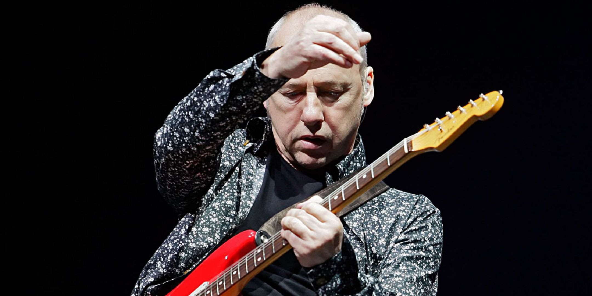
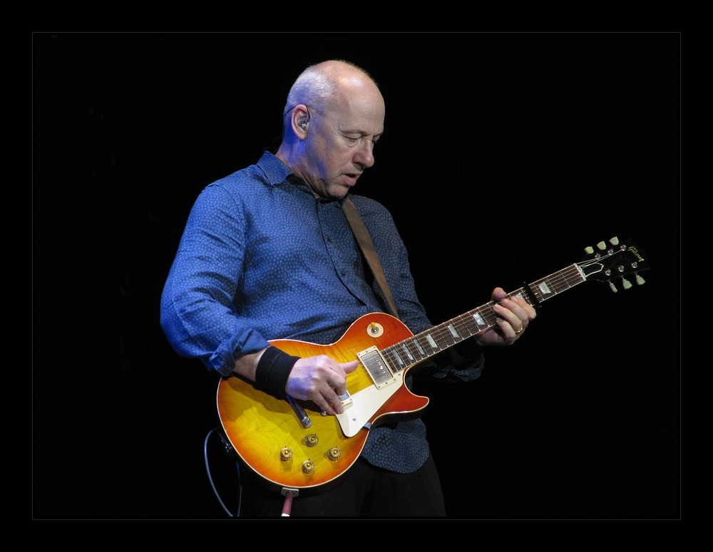
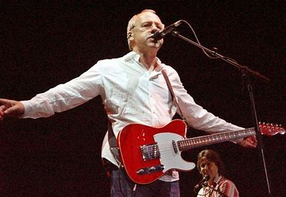

Mark Knopfler - The voice of Dire Straits
  Hej! 😀
Jag heter Fredrik Dahlbom, bor i Varberg och går utbildningen "Webbutvecklare e-handel" på Changemaker educations. Jag har alltid tyckt om att lyssna på rockmusik, i synnerhet Mark Knopfler. Därför föll det sig naturligt att jag skapade en enkel hemsida tillägnad honom.
Jag har lyssnat på alla Knopflers album sedan han blev soloartist och även om vissa skivor är bättre än andra - så är det ju med alla artister - tycker jag att han håller en hög lägstanivå. Skälen till att jag tycker om Knopflers låtar är att de är melodiösa, fina och lagom rockiga. Dessutom tycker jag att Knopfler sjunger bra.
På denna webbplats kan ni läsa mer om Mark Knopfler, som till exempel vilken bakgrund han har, vilka artister han har samarbetat med och vilken filmmusik han har gjort. Jag har också tagit upp några av Knopflers album som jag är förtjust i. Om ni skulle vilja kontakta mig, och ställa frågor om Mark Knopfler, får ni gärna använda mitt kontaktformulär.